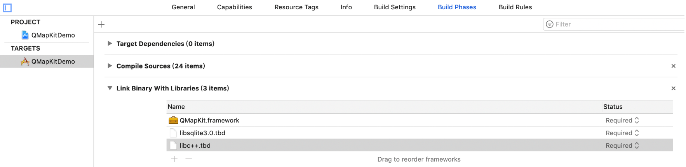
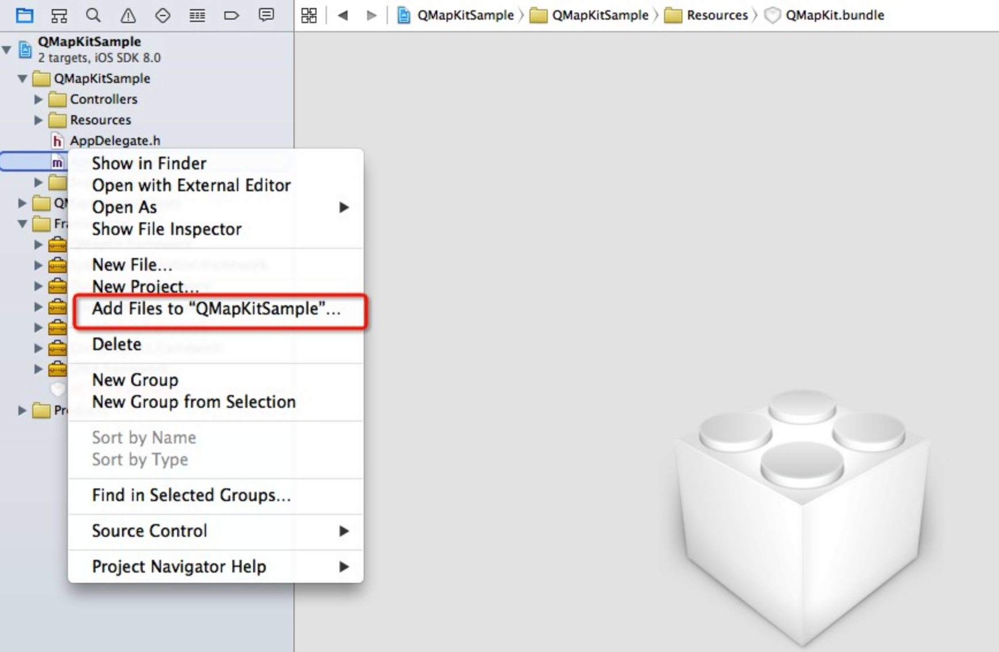
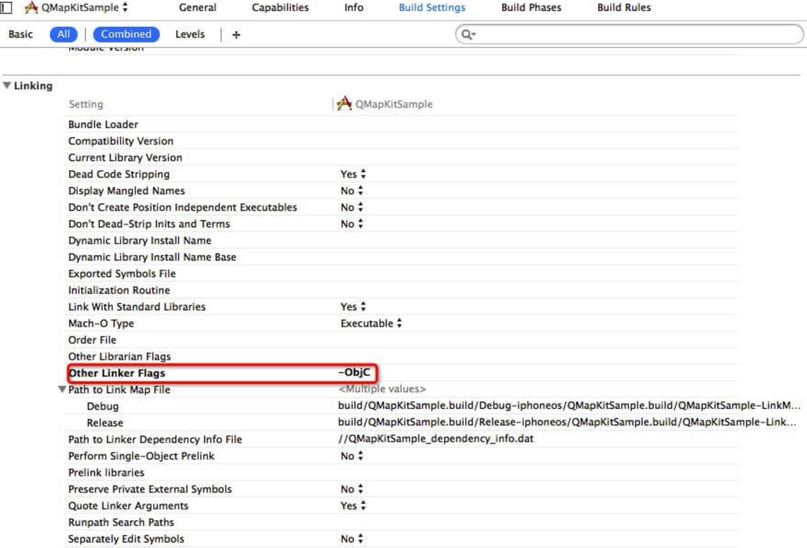

手动配置
这里我们提供XCode的腾讯地图SDK工程配置方法。
1. 添加framework
首先，添加依赖库。3D地图需要依赖 libsqlite3.tbd、libc++.tbd、QMapKit.framework，最终 3D 地图配置截图如下：

第二步，添加framework的资源文件。开发者需在腾讯地图 iOS SDK官网下载sdk资源包，解压后在sdk文件夹中找到QMapKit.framework文件，然后在工程界面选中 library文件夹 右键弹出菜单中选择"Add Files To..."，从文件夹sdk 中将文件QMapKit.framework添加到工程中，在弹出窗口中勾选"Copy items into destination group's folder(if needed)" 。
2. 添加资源文件
在工程界面右键弹出菜单中选择"Add Files To..."，从文件夹sdk（同步骤1）->QMapKit.framework中将资源文件QMapKit.bundle添加到工程中，在弹出窗口中勾选"Copy items into destination group's folder(if needed)" 。

添加需要的编译选项，在 TARGETS - Build Settings - Other Linker Flags 中添加如下内容：-ObjC。

3. 注意事项
如果没有正确添加资源文件，则有可能出现地图加载不成功现象，如下图：